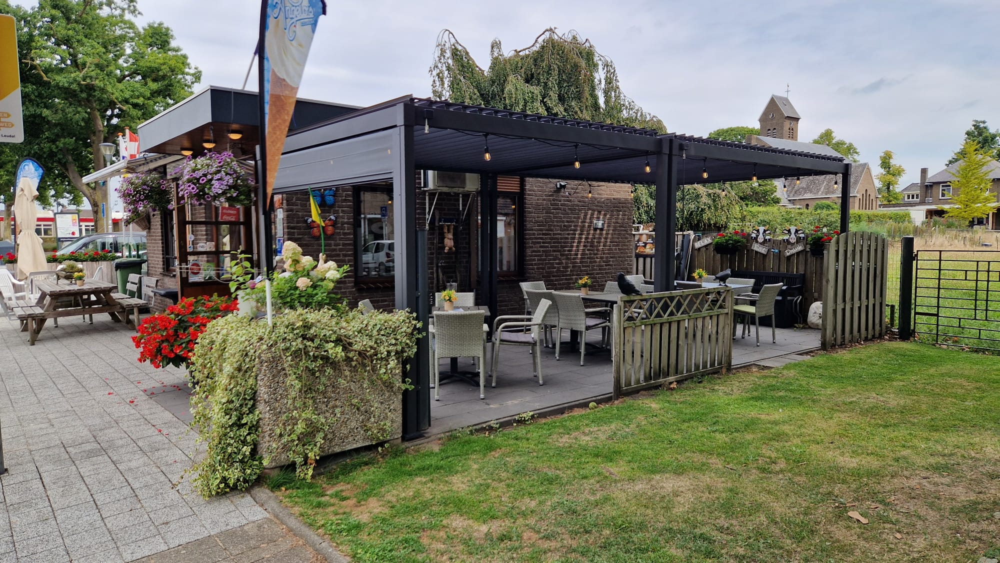
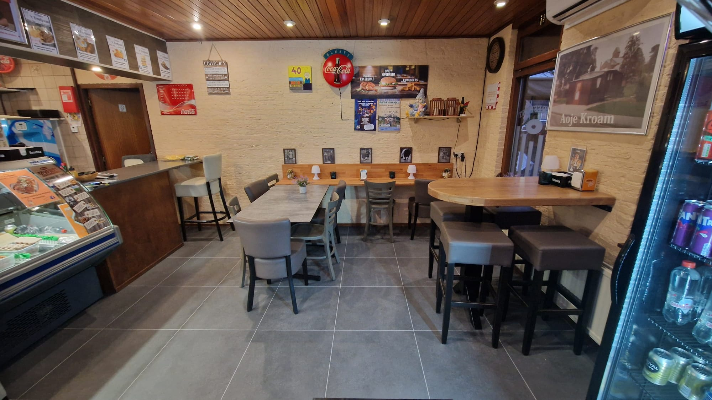

Europastraat 1b, Kelpen-Oler
Friture 't Trefpunt
Al meer dan 40 jaar een begrip in Kelpen-Oler en omgeving. Ambachtelijke frites, snacks, schotels en in de zomer relaxed eten op ons terras.
Welkom bij het friet team
Wij bakken ambachtelijke frites van Aviko Oerfriet. Ook voor schotels bent u bij ons aan het goede adres: schnitzel, halve haan, spareribs, shoarma of een kapsalon, allemaal met friet en garni.
Verder hebben wij diverse frisdranken, koffie en ijskoffie a la vie, milkshakes of een lekker soft ijsje. Eet u hier, dan is er gratis wifi. Dus u bent welkom bij Friture 't Trefpunt.
- 40+ jaar in Kelpen-Oler
- Aviko Oerfriet
- Wifi gratis

De kaart
Alle prijzen in euro's. Ook om af te halen.
- Friet2.502.90
- Friet spec3.554.65
- Friet zuurvlees4.705.90
- Friet oorlog4.105.20
- Friet satésaus3.554.65
- Friet goulash4.605.90
Ambachtelijke frites van Aviko Oerfriet.
- Frikandel2.15
- Frikandel XXL3.85
- Frikandel spec.2.80
- Loempidel2.85
- Kroket rundvlees2.40
- Kroket goulash2.40
- Kroket saté2.40
- Bami2.35
- Bami blok2.35
- Bami oriental2.40
- Nasi2.35
- Viandel2.65
- Kipspies3.30
- Kipkorn2.40
- Kipfingers3.10
- Kipnuggets3.10
- Sitostick3.50
- Loempia3.95
- Mexicano2.50
- Belcrunch2.95
- Shoarmarol2.90
- Smulrol2.80
- Saterol2.80
- Gehaktbal2.50
- Gehaktbal spec.3.75
- Gehaktstaaf2.50
- Bitterballen 6 st., vega3.50
- Kaassoufflé vega2.10
- Mixstick2.50
- Knakworst2.00
- Curryworst3.75
- Visstick3.10
- Mini loempia's 7 st., vega2.70
- Twijfelaar4.80
- Kaastengels3.75
- Butterfly / tempura 5 st.3.50
- Mozzarella sticks 5 st.3.50
- Broodje frikandel3.00
- Broodje kroket3.00
- Broodje ham / kaas3.00
- Hamburger spec.3.75
- Hamburger 't Trefpunt4.95
- Kipburger spicy5.10
Schotels zijn inclusief friet en garni.
- Schnitzel7.00
- Schnitzel / friet12.50
- Schnitzel champignonroomsaus14.50
- Schnitzel zigeunersaus14.50
- Shoarma schotel14.50
- Nasi schotel12.90
- Bami schotel12.90
- Halve haan7.50
- Halve haan met friet13.00
- Uitsmijter 3 eieren9.50
- Friet met 2 saté's 200 gr.12.90
- Spareribs schotel15.90
- Kapsalon9.50
- Frisdranken vanaf2.00
Ook afhaal menu's, zoals schnitzel champignonroomsaus en hamburger 't Trefpunt. Smakelijk eten en tot ziens!
Soft ijs, milkshakes & iets te drinken
Soft ijs
Een lekker soft ijsje, met caramel, aardbei of chocola.
Milkshakes
Een koude milkshake, binnen, op het terras of om mee te nemen.
Koffie & ijskoffie
Gewone koffie, of een ijskoffie a la vie als het warm is.
Frisdranken
Diverse frisdranken en light-frisdranken, vanaf € 2.00.
Buiten eten onder de pergola
Bij ons kunt u in de zomer relaxed en lekker eten op ons terras. Met uitzicht op het gras en de kerktoren, tussen de bloembakken.
Liever binnen? Daar zit u aan tafel of aan de statafel. Wifi is gratis.
Openingstijden
| Maandag | gesloten |
|---|---|
| Dinsdag | 16:00 – 22:00 |
| Woensdag | 11:30 – 13:30 16:00 – 22:00 |
| Donderdag | 16:00 – 22:00 |
| Vrijdag | 11:30 – 13:30 16:00 – 22:00 |
| Zaterdag | 16:00 – 22:00 |
| Zondag | 16:00 – 22:00 |
Op woensdag en vrijdag ook tussen de middag open.